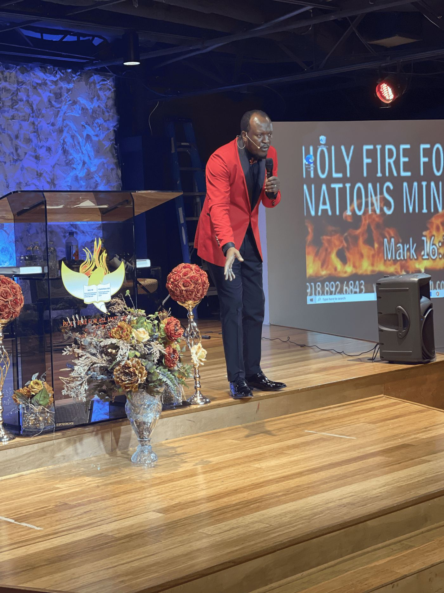

- Home
- Photo Gallery
Photo gallery
Life at Jesus Embassy
Worship, prayer, family, and outreach. Select any photo to see it larger.
Sunday Worship
Prayer and Ministry
Church Family
Outreach
Be part of the story
Come Worship With Us.
Sunday worship at 2:30 PM, 3405 Custer Rd., Suite 200, Plano.
